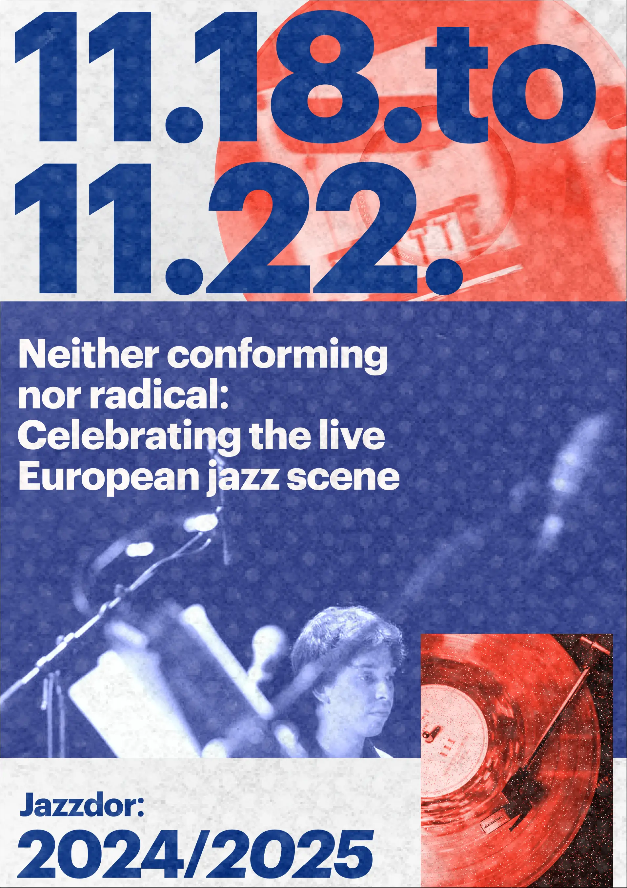
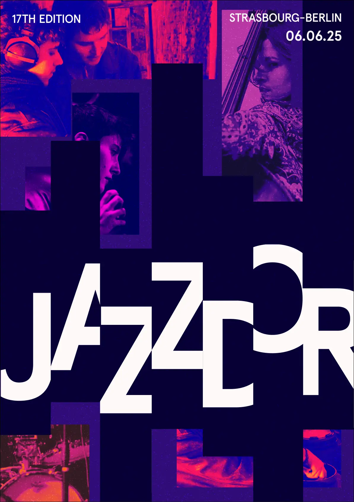
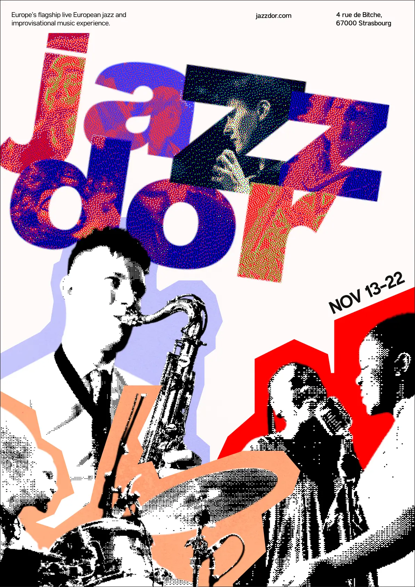
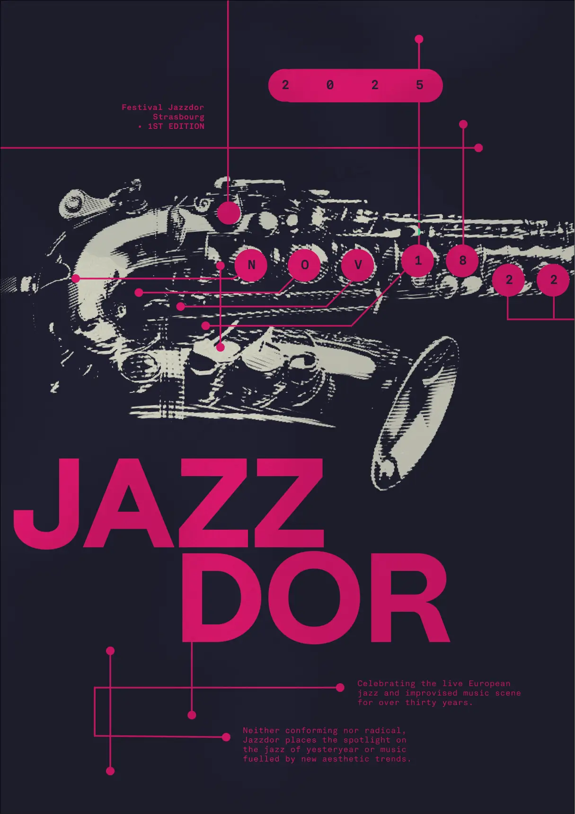
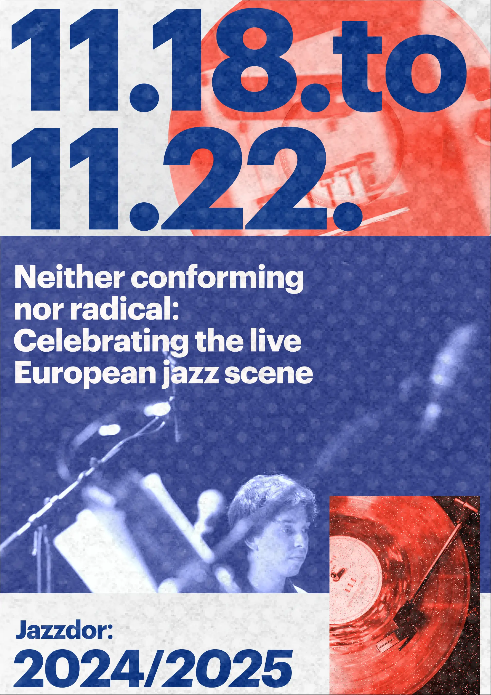
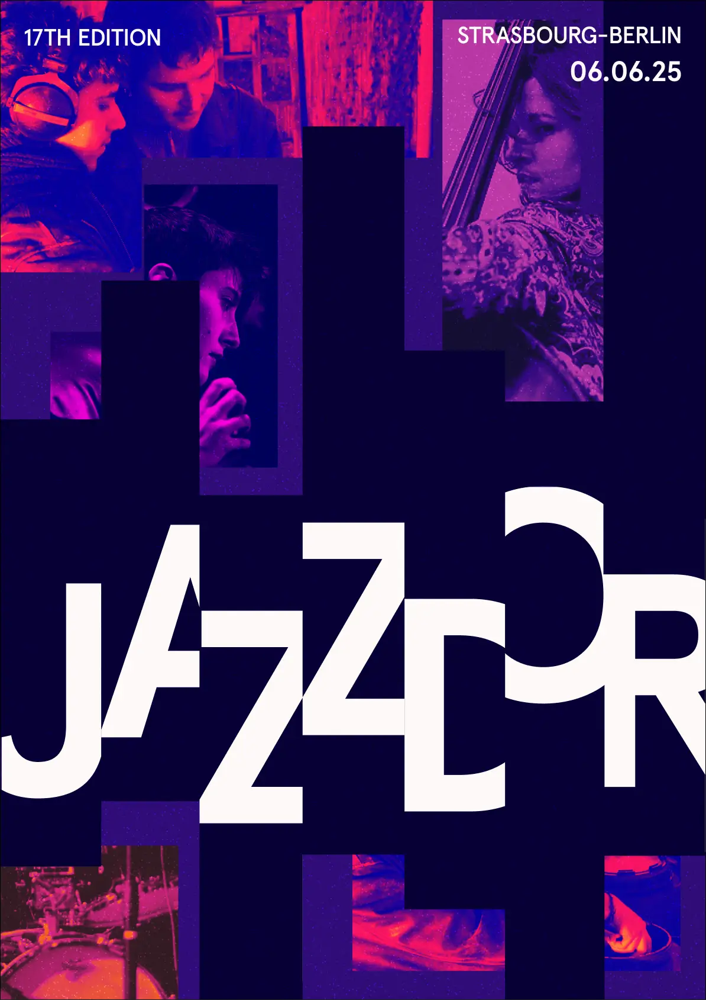
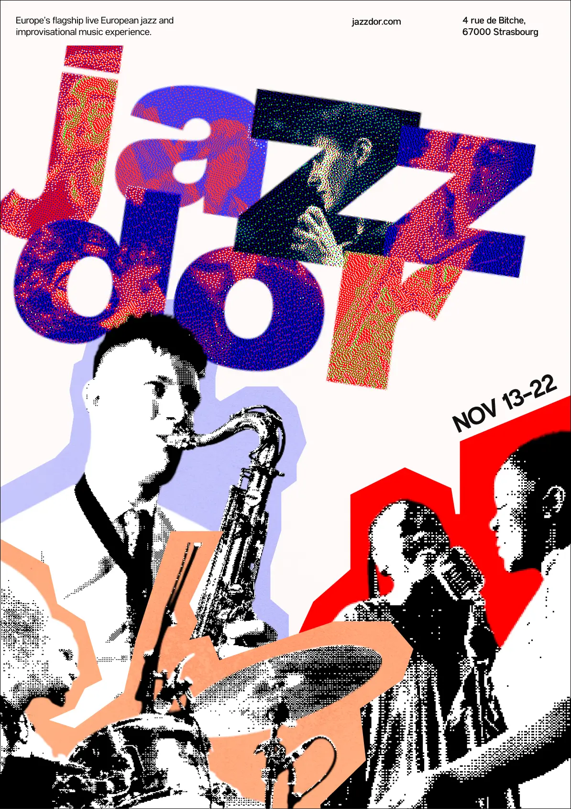
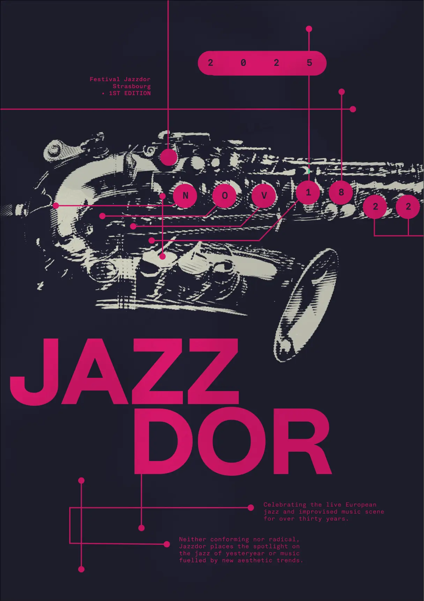

Poster Iterations
The first step was forming the art direction and exploring different lines on investigations . We did this by starting with posters for Jazzdor. Along the way we collected design insights we used along the way.
Insight 01.
The design must speak for the organizations values.
Through this poster iterations we learned to make designs that were not just visually appealing but also explained the purpose of the organization.
Insight 02.
Visual research is the key to a strong design
Throughout the process the importance of research became clear. I learned to not design in my head and instead learn from my visual refences.
Insight 03.
The content must be specific and relevant in helping you reach your goal.
part of this project was content design so through the feedback we recived and through application we learned to frame out content based on the requirements of the organization.

 






